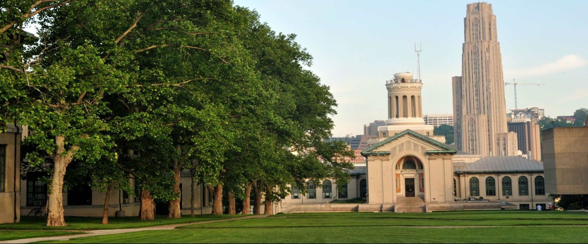

Carnegie Mellon University
Carnegie Mellon University is a private research university in Pittsburgh, Pennsylvania. The university began as the Carnegie Technical Schools, founded by Andrew Carnegie in 1900. In 1912, the school became the Carnegie Institute of Technology and began granting four-year degrees. In 1967, the Carnegie Institute of Technology merged with the Mellon Institute of Industrial Research to form Carnegie Mellon University. The university's 140-acre main campus is 3 miles from Downtown Pittsburgh and abuts the Carnegie Museums of Pittsburgh, the main branch of the Carnegie Library of Pittsburgh, the Carnegie Music Hall, Schenley Park, and the Phipps Conservatory and Botanical Gardens. Carnegie Mellon has seven colleges and independent schools: the College of Engineering, College of Fine Arts, Dietrich College of Humanities and Social Sciences, Mellon College of Science, Tepper School of Business, H. John Heinz III College and the School of Computer Science.
Location:
- Rochester, NY
Male:Female Ratio:
- 56%:44%
Campus Organizations:
- Society of Women Engineers
- Women @ School of Computer Science
Local Organizations:
- Girl Develop it Pittsburgh
- Society of Women Engineers Pittsburgh
Local Tech Events:
- Django Girls Pittsburgh
- Girl Develop It Pittsburgh